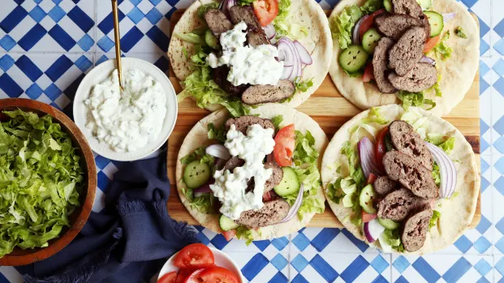
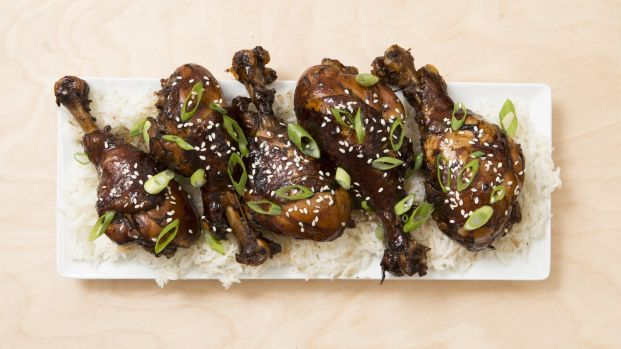

Menu
The Ultimate Greek Salad

"This is the most delicious salad - fresh and wonderful-tasting. FYI, lettuce can very much be a part of any greek salad - if you want it to. We like lettuce in my family and I often add it.
Price: 40$
Simple Oven-Baked Sea Bass

If you're looking for a simple recipe that really preserves the delicate flavor of sea bass, then I highly recommend you try this one. You can try this with other types of fish but my version used a Chilean sea bass. The original recipe came from SparkRecipes and this is my simplified version of it. Enjoy!
Price: 70$
Vegan Bacon

If you were to use this in a BLT sandwich and replaced the bacon with it, you would never know the difference! My kids are bacon lovers, but now they prefer this.
Price: 60$
Japanese Mum's Chicken

The liquid will thicken to a glaze if you are patient. It just takes a bit of time. If you feel your chicken is cooked (and going to overcook) remove it before going on to reduce the liquid. Same thing, if you must use breast meat, remove it (so it doesn't dry out) and continue reducing the liquid .
Price: 50$
If you're looking for a simple recipe that really preserves the delicate flavor of sea bass, then I highly recommend you try this one. You can try this with other types of fish but my version used a Chilean sea bass. The original recipe came from SparkRecipes and this is my simplified version of it. Enjoy!